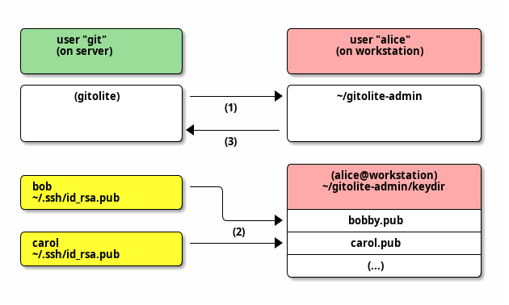

basic administration
If you really, really, really want to manage gitolite directly on the server, i.e., without cloning the gitolite-admin repo, you can -- here's how. This is likely to be of interest mainly to puppet/chef type installations.
Day-to-day management of a gitolite site is done by cloning the special 'gitolite-admin' repo, making appropriate changes to it, and pushing it back to the server. The concepts and terminology page has a section with some details on what happens after the push.
In other words, do NOT add new repos or users manually on the server!
clone the gitolite-admin repo
To clone the admin repo, go to the workstation where the public key used in 'setup' came from, and run this:
git clone git@host:gitolite-admin
NOTE that (1) you must not include the repositories/ part (gitolite handles
that internally), and (2) you may include the ".git" at the end but it is
optional.
If this step fails, be sure to look at the two pages linked from the ssh
page before asking for help. A very basic first step is to run the info
command (ssh git@host info); this page tells you what to expect.
add/remove users
NOTE: This section only applies to ssh mode. If you've installed gitolite in http mode, adding and removing users is outside the scope of gitolite.
Strictly speaking, gitolite doesn't know where users come from. (If that
surprises you, go back to the concepts page and read the section on
"authentication and authorisation"). However, gitolite does help with
ssh-based authentication, by making it easy to add and remove users from
~/.ssh/authorized_keys.
To add or remove users, you have to clone the gitolite-admin repository, then add or remove ssh pubkey files from the "keydir/" directory in the clone. Then commit those changes and push.
Here's how to add users to gitolite. "alice" is the administrator and is adding "bob" and "carol".

All this is done from the admin (Alice)'s workstation. The steps are:
-
Run
git clone git@server:gitolite-admin. -
Obtain pubkeys from each user; email, USB, DHL, pigeon post, owl mail, any method you like.
Rename each received file to the name of the user, add a ".pub" at the end, copy it into
keydir/in the gitolite-admin repo you cloned. -
Run
git add keydir, thengit commit, thengit push.
You do NOT need to add Carol or Bob as real (Unix) users. You do NOT add their keys directly anywhere on the server, and you most definitely do NOT fiddle with the authorized_keys file on the server directly!
To remove a user, git rm keydir/alice.pub.
Commit and push the changes. On receiving the push, gitolite will carry out the changes specified.
NOTE: your users' public key is typically
$HOME/.ssh/id_rsa.pub on her workstation. Please make sure it is in
openssh's default format.
multiple keys per user
You can put pubkeys in subdirectories within "keydir/", because the user name is simply the base name of the public key file name. That is, 'keydir/alice.pub', 'keydir/home/alice.pub', 'keydir/laptop/alice.pub', (or even 'keydir/work/desktop/alice.pub' -- any number of subdirectory levels are OK) all resolve to user "alice".
This is the simplest and most understandable way to allow multiple keys per user.
Please see appendix 2 at the bottom of this document for an older way that will continue to be supported but has proved hard to explain!
(Finally, if you insist on wanting to actually put all the keys for a user
into a single, multi-line, pubkey file, it is possible. For details, see the
program src/triggers/post-compile/ssh-authkeys-split in the source.)
add, remove, and rename repos
Note: this page describes how to add new repos. To bring already existing repos under gitolite's control, click here.
To add a new repo, you have to clone the gitolite-admin repository, then
edit the conf/gitolite.conf file. In that file, add the repo, along
with at least one user with some permissions.
You can add the new repo in its own paragraph,
repo bar RW+ = alice
or you can add it to an existing repo line, if the new repo is intended to have the same access rules:
repo foo bar RW+ = alice
Either way, commit and push the changes. Gitolite will create a bare, empty, repo on the server that is ready to be cloned and pushed to.
As you can see, the "repo" line can have any number of repo names or repo group names in it. However, it can only be one line; this will not work:
repo foo repo bar # WRONG; 'foo' is now forgotten RW+ = alice
If you have too many to fit on one line comfortably, you can create and use a repo group:
@myrepos = foo @myrepos = bar . . . @myrepos = zzq repo @myrepos RW+ = alice
removing/renaming a repo
Removing a repo is not so straightforward. You certainly must remove the
appropriate lines from the conf/gitolite.conf file, but gitolite will not
automatically delete the repo from the server. You have to log on to the
server and do the dirty deed yourself :-)
It is best to make the change in the conf file, push it, and then go to the server and do what you need to.
Renaming a repo is also not automatic. Here's what you do (and the order is important):
- Go to the server and rename the repo at the Unix command line. Don't forget to retain the ".git" extension on the directory name.
- Change the name in the conf/gitolite.conf file in your gitolite-admin repo clone, and add/commit/push.
appendix 1: bringing existing repos into gitolite
Warning!
Gitolite will clobber any existing update hook in your repos when
you do this. Please see either the cookbook or the non-core page
for information on how to make your existing update hook work with
gitolite.
Gitolite may clobber any existing "git-daemon-export-ok" file in your repo; see the page on allowing access to gitweb and git-daemon for how to enable that via gitolite.
With that out of the way, here's how to do this:
Warning!
This warning applies to versions before v3.6.10.
Depending on how your gitolite.conf is setup, and how much time you take between moving the repositories and completing the rest of the instructions below, it may be possible for a user to read or write the repos you are in the process of migrating.
To prevent writing, you can disable write access to all repos before you start this process. Preventing reading is much harder, but at the same time, most configurations will not have this problem. If in doubt, ask on the mailing list.
Either way, don't forget to re-enable access at the end of this process!
First, on the server:
-
Move the repos to
$HOME/repositories. -
Make sure that:
- They are all bare repos.
- All the repo names end in ".git".
- All the files and directories are owned and writable by the gitolite hosting user (especially true if you copied them as root).
- There are no symbolic links left over from wherever the files were brought from.
-
Run the following three commands:
gitolite compile gitolite setup --hooks-only gitolite trigger POST_COMPILE -
If the repos are wildcard repos that already match some repo regex in the conf file, you need to manually create the gl-creator file, like so:
echo username > ~/repositories/path/to/repo.git/gl-creatorI haven't yet found this to be common enough to bother wrapping it in a nice interface or command.
However, if the repos are normal repos, then, back on your workstation:
- Add them to the
conf/gitolite.confin your clone of the admin repo, then commit and push the change.
appendix 2: old style multi-keys
There is another way that involves creating key files like alice@home.pub
and alice@laptop.pub, but there is a complication because gitolite also
allows full email addresses as user names. (i.e., sitaramc@gmail.com.pub
denotes the user called sitaramc@gmail.com).
This older method of enabling multi-keys was developed to deal with that. It will continue to work and be supported in code, simply because I prefer it. But I will not accept questions or doc patches for it, because it seems it is too difficult to understand for a lot of people. This table of sample pubkey filenames and the corresponding derived usernames is all you get:
-
plain username, no multikey
sitaramc.pub sitaramc -
plain username, with multikeys
sitaramc@laptop.pub sitaramc sitaramc@desktop.pub sitaramc -
email address as username, no multikey
sitaramc@gmail.com.pub sitaramc@gmail.com -
email address as username, with multikeys
sitaramc@gmail.com@laptop.pub sitaramc@gmail.com sitaramc@gmail.com@desktop.pub sitaramc@gmail.com